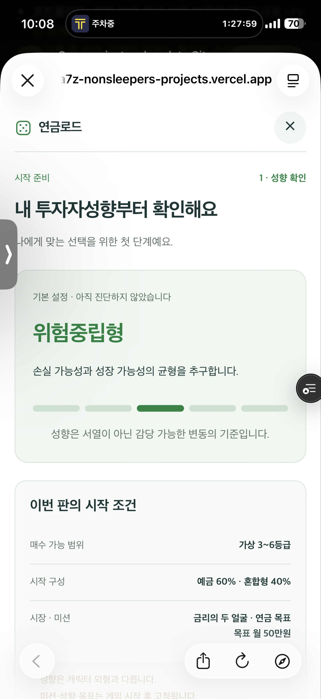
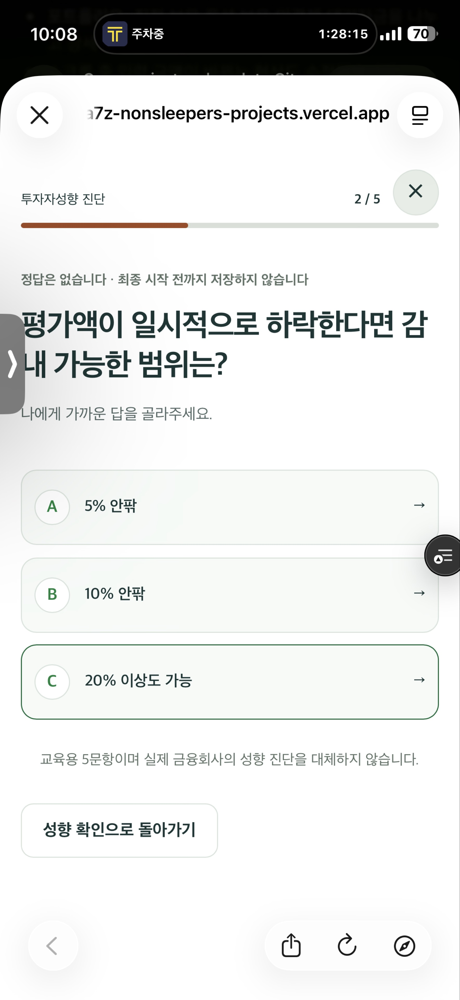

네 가지 수정 후 D4로 진행합니다
| 과제 | 현재 확인 | 권장 구현 | 영향 |
|---|---|---|---|
| FB-012 미진단 진입 | 진단 전에도 기본값 ‘위험중립형’과 시작 구성이 표시됨 | 미진단 안내와 ‘5문항으로 성향 알아보기’만 먼저 표시. 진단 후 결과 → 옵션 선택 → 시작 | 시작 준비·진단 이력 판정 |
| FB-013 문항 테두리 | 모바일에도 hover 스타일이 적용되고 다음 문항에서 버튼 요소가 재사용됨 | 터치·마우스 강조 분리, 문항별 버튼 구분, 다음 문항 기본 테두리 | 표시·입력 안정성 |
| FB-014 시작 비중 | 공격투자형은 위험자산 70%로 출발 | 예금 35% · 혼합형 20% · 주식 ETF 45%. 시작 위험비중 65% | 신규 판의 배분·성과·비교 기준 |
| FB-015 대기자금 이자 | 현재 IRP 대기자금 이자 0 | 권장: 턴 시작의 주문 가능 대기자금에 0.1% 교육용 이자. 현재 0% 유지안도 비교 | 새 금융 규칙이므로 명시적 승인 필요 |
①·②는 시작 경험 개선입니다. ③·④는 자산과 결과에 영향을 주므로 새 판 적용·구 저장 호환성·정산 합계까지 검증한 뒤 D4를 진행합니다.
진단하기 전에는 성향을 보여주지 않습니다
원인과 추가 영향
renderStartPreparation이 진단 여부와 관계없이 기본 성향의 이름·설명·눈금·시작 배분을 렌더링합니다. ‘미진단’이라는 작은 설명보다 ‘위험중립형’이 크게 보여 진단 결과처럼 읽힙니다.
저장 불러오기에도 보완이 필요합니다. 진단 이력이 없는 설정 저장을 읽으면 migrateSave가 legacy로 바꾸며, 현재 시작 조건은 이를 미진단으로 차단하지 않습니다. 설정 변경 후 새로고침해도 미진단 상태가 유지되도록 함께 수정합니다.
구현 방식
- 유효한 진단/확인 이력이 있는지 공통 함수로 판정합니다. 내부 기본값과 사용자가 확인한 성향을 구분합니다.
- 이력이 없으면 성향 이름·눈금·성향별 매수 등급·시작 배분·추천 디폴트옵션을 숨깁니다. 아직 결정되지 않은 결과를 미리 표시하지 않습니다.
- 첫 화면은 짧은 설명, 5문항 안내, 주요 버튼 하나로 구성합니다. 작동하지 않는 ‘다음’ 버튼은 제거합니다.
- 5문항 완료 후 결과를 보여주고 ‘이 성향으로 옵션 선택’을 누르면 추천과 현재 선택이 구분된 디폴트옵션 화면으로 진행합니다.
- 최종 게임 시작 때 성향과 옵션을 확정합니다. 중간 취소는 기존 게임과 저장된 성향을 바꾸지 않습니다.
나에게 맞는 투자 방식을
먼저 알아볼까요?
다섯 가지 질문으로 감당할 수 있는 변동의 범위를 알아봐요.
답을 모두 고른 뒤 성향과 시작 구성을 보여드릴게요.
시안: 문서의 다음 항목으로 이동합니다.
| 상태 | 처리 |
|---|---|
| 이력 없음 / 기본값만 있는 구 저장 | 새 판은 진단부터. 이력 없는 기본 성향을 확인된 결과로 승격하지 않음 |
| 유효한 진단 결과 있음 | 저장된 결과와 다시 진단 버튼 표시. 매번 진단을 강제하지 않음 |
| 과거에 명시적으로 확인한 성향 | ‘이전에 확인한 성향’으로 표시. 진단 완료라고 바꿔 부르지 않음 |
| 플레이 중인 구 저장 이어하기 | 해당 판의 성향·보유분으로 재개. 진단을 이유로 진행을 막거나 자산을 재배분하지 않음 |
| 주간 도전 | 기존 공통 조건을 ‘도전의 고정 성향’으로 명시. 개인의 진단 결과로 표시·저장하지 않음 |
수정 위치와 완료 조건
대상: start-preparation.ts, ui-state.ts, app.ts, design-a1.css.
첫 설치·설정 저장 후 재접속·이력 누락·성향 ID 불일치·유효한 구 이력·주간 도전·기존 판 이어하기를 확인합니다. 화면에서 다음 버튼을 우회해도 진단 전 일반 새 판을 확정할 수 없어야 합니다. 중간 취소와 최종 시작 전 새로고침은 기존 게임을 보존해야 합니다.
다음 질문은 아무 답도 강조되지 않은 상태로 시작합니다
확인한 구조와 원인 가설
답안을 선택 상태로 저장하는 코드가 있는 것은 아닙니다. 터치 환경에도 적용되는 .choice-stack button:hover와 문항 간 동일 버튼 재사용 때문에 터치 강조가 남을 가능성이 높습니다. 첨부 화면과 일치하는 구조이며, 실제 iOS Safari 재현을 통해 원인을 최종 확인합니다.
다음 질문의 제목에 초점을 옮기는 동작은 이미 존재합니다. 이 동작을 유지하면서 버튼의 표시 상태를 분리합니다.
구현 방식
- 진단 화면의 hover 효과는 마우스 등 정밀 포인터 환경에서만 적용합니다. 터치에서는 누르는 동안 짧은 반응만 표시합니다.
- 각 버튼에 문항 번호와 답안 번호를 조합한
data-key를 부여합니다. 다음 질문은 새 버튼 요소로 렌더링합니다. - 질문이 바뀐 뒤 이전 문항의 이벤트가 점수를 더하지 않도록 문항 식별자를 검사합니다.
- 키보드 사용자의
:focus-visible테두리와 제목으로의 초점 이동은 유지합니다. 전체 outline 제거로 해결하지 않습니다.
현재처럼 답을 누르면 바로 다음 질문으로 이동합니다. 별도 ‘다음’ 버튼이나 추가 확인 팝업을 늘리지 않습니다.
투자할 때 더 중요하게
생각하는 것은?
답을 누르면 다음 문항의 테두리 초기화를 확인할 수 있습니다.설명용 2문항 시안입니다. 실제 성향 점수를 계산하거나 저장하지 않습니다.
수정 위치와 완료 조건
대상: 진단 렌더러·답안 이벤트, DOM 갱신의 기존 data-key 지원, 진단 범위 CSS. 공통 DOM 갱신기를 통째로 바꾸지 않고 기존 키 기능을 사용합니다.
모바일에서 A/B/C 각 답안을 선택한 뒤 다음 문항의 세 버튼이 모두 기본 테두리여야 합니다. PC hover와 키보드 Tab/Enter는 식별 가능해야 하며, 5문항 점수·문항 진행·취소·재진단·연타를 확인합니다. 시안 동작은 실제 Safari 회귀 검증의 증거로 사용하지 않습니다.
공격투자형의 시작 위험비중을 65%로 낮춥니다
현재 공격투자형은 예금 30%·혼합형 20%·주식 ETF 50%로 시작합니다. 게임에서 혼합형과 ETF는 위험자산으로 계산되므로 시작부터 70%입니다. 첫 시장에서 위험자산이 상대적으로 오르면 운용을 해보기도 전에 매수가 제한되기 쉽습니다.
위험자산 70%
예금 30% · 혼합형 20% · ETF 50%
위험자산 65%
예금 35% · 혼합형 20% · ETF 45%
시작 IRP 1억 800만원은 그대로 두고 ETF에서 예금으로 540만원을 옮기는 교육용 시작 예시입니다. 다른 네 성향의 시작 구성과 각 성향의 리밸런싱 목표는 이번 요청에서 바꾸지 않습니다. 실제 개인에게 권하는 투자 배분은 아닙니다.
첫 시장 반영만 비교한 결과
| 시장 시나리오 | 현재 70% 출발 첫 반영 후 한도 초과 | 65% 출발 제안 첫 반영 후 한도 초과 | 65% 출발 표본의 최대 위험비중 |
|---|---|---|---|
| 금리의 두 얼굴 | 593 / 1,000 · 59.3% | 0 / 1,000 | 66.60% |
| 물가와의 경주 | 596 / 1,000 · 59.6% | 0 / 1,000 | 66.61% |
| 긴 겨울 | 307 / 1,000 · 30.7% | 0 / 1,000 | 66.15% |
| 회복의 파도 | 692 / 1,000 · 69.2% | 0 / 1,000 | 67.14% |
계획용 계산: 시나리오별 동일 시드 1,000개, 모든 성향의 현행 시작 구성과 공격투자형 후보 비교, 총 24,000회 첫 시장 계산. 다른 네 성향의 현행 구성에서는 초과 0건. 주사위 도착·생활 사건·운용·후속 턴은 포함하지 않았으며 이후의 한도 초과까지 방지한다는 의미는 아닙니다. 결과 원본 · 재현 스크립트
구현과 영향
- 새 규칙의 초기 배분표를 한 곳에서 정의하고, 시작 조건 표시·초기 예금 약정·보유 포지션·비교 지수 초기 비중·고스트가 같은 값을 사용하도록 연결합니다.
- 공격투자형의 장기 리밸런싱 목표는 현재 값을 유지합니다. 시작 구성과 목표 구성의 목적을 구분해 설명합니다. 리밸런싱 후 다시 70% 가까이에 도달할 수 있습니다.
- 평가액 기준 위험 한도, 한도 초과 안내와 추가 매수 제한은 계속 적용합니다. 강제 매도를 추가하거나 첫 턴 예외로 한도를 숨기지 않습니다.
- 기존 진행 중인 판과 분기 연습은 원래 시작 구성을 유지합니다. 신규 구성의 고스트를 구 게임에 붙이지 않습니다.
평가금액 기준의 위험자산 한도와 시장 상승 후 추가 매수 제한은 삼성자산운용 연금투자 가이드북 Q3의 설명과 방향을 맞춥니다. 적격 TDF·승인 디폴트옵션 등 기존 상품별 예외 판정은 별도 유지합니다.
수정 위치와 완료 조건
대상: 현재 배분 데이터, 초기 보유 생성, 새 판·고스트 생성, 시작 조건 표시, 규칙 버전 및 저장 검증. 구 규칙용 배분도 보존하는 버전별 조회 구조를 제안합니다.
다섯 성향의 배분 합계 100%, 시작 IRP·생활자금·세금 재원 보존, 최초 위험비중, 같은 시드 첫 턴 비교를 검증합니다. 이후 12턴의 리밸런싱·위험자산 주문 제한·고스트·분기 재현도 확인합니다.
현재 대기자금 이자는 0입니다. 도입 여부를 확정합니다
applyMarketStep은 예금 약정 이자와 투자 상품의 손익을 반영하지만 irpCash에는 이자를 더하지 않습니다. 현재 ‘예금 상품의 이자’와 ‘IRP 대기자금의 이자’는 서로 다르게 동작합니다.
실제 금융회사의 현금성 자산에는 이자가 발생하는 사례가 있습니다. 미래에셋증권 공식 IRP FAQ는 미투자 현금성 자산의 운용·이자 지급을 설명합니다. 이 사례를 모든 금융회사나 현재 NH은행 금리로 일반화하지 않으며, 문서의 금리 숫자를 게임에 그대로 적용하지 않습니다.
턴당 0.1% 교육용 이자
턴 시작 시 주문 가능한 IRP 대기자금에 자동 적용합니다. 새로운 상품 선택이나 운용지시는 필요 없습니다.
대기자금도 소액의 이자가 생기지만 투자·위험관리의 판단은 계속 필요하도록 낮게 둡니다.
현재 0% 유지 + 설명 명시
계산과 저장 형식의 변경을 줄입니다. 포트폴리오와 매뉴얼에 ‘이 게임은 대기자금 이자를 생략합니다’라고 설명합니다.
현실의 현금성 자산에 항상 이자가 없다고 오해하지 않도록 안내가 필요합니다.
이 게임은 수익률·비용을 턴당 교육용 값으로 사용하고, 물가·생애주기에만 별도의 시간 가정을 둡니다. ‘1턴=1년’ 또는 ‘연 0.1%’로 표기하지 않습니다.
권장안의 계산 순서
이번 턴 이자 = 턴 시작 주문 가능 IRP 대기자금 × 0.001
원 미만 내부 계산은 기존 자산 계산과 일치시키고, 화면은 원 단위로 표시합니다.
- 턴 시작에 1,000만원이 있으면 이자 1만원.
- 그 턴 도중 200만원을 추가납입하면 해당 200만원의 이자는 다음 턴부터.
- 매수 주문으로 예약된 금액·미결제 매도대금·생활자금·보유 예금은 대기 이자 대상에서 제외.
- 새로고침·창 열기·같은 턴 재조회로 이자를 다시 지급하지 않음.
- 12턴 종료 뒤 미결제 주문 마무리만을 위해 추가 이자를 지급하지 않음.
정산과 화면에는 이렇게 연결합니다
- 시장 반영 영역에 대기자금 이자 +10,000원처럼 한 줄로 표시합니다. 상품별 가격 손익과 구분하되 전체 운용손익에는 포함합니다.
- 추가납입·외부 입출금·매매로 인한 자산 이동으로 분류하지 않습니다. 세액공제 대상 납입액이나 원금 재원을 늘리지 않습니다.
- 포트폴리오 대기자금 옆에 ‘턴당 0.1% · 게임 가정’을 표시합니다. 별도 이자 신청 버튼·상품·팝업은 만들지 않습니다.
- 실제 운용지수에는 이자를 포함하고, 상품 비중으로 운용되는 가상 비교 지수에는 존재하지 않는 현금을 만들어 이자를 붙이지 않습니다. 비교 가정을 설명합니다.
구현 위치와 반드시 검증할 경계
대상: 턴 시작 처리, market-engine.ts, settlement-engine.ts, performance-engine.ts, GameState·정산 타입, 저장 검증, 정산·포트폴리오 표시. 이율과 시작 배분은 신규 규칙 스냅샷으로 관리합니다.
현재 판의 규칙·턴 번호로 한 번만 적용하고, 이자 반영 기록을 저장합니다. 구 판은 0으로 계속 진행합니다. 잔액 0·원 미만·큰 금액·전액 매수·예약 주문·미결제 매도·추가납입·이체·재진입·12턴 최종 결제·구 저장·분기·고스트를 검사합니다. 이자를 포함한 총액과 정산 구성 합계, 수령 계산의 재원 구분이 일치해야 합니다.
승인 후에는 대기·매수·리밸런싱 전략의 12턴 비교도 수행해 대기 전략이 과도하게 유리해지지 않는지 확인합니다. 이번 계획 단계에서는 첫 시장 배분 비교만 실행했고 이자 규칙을 구현·검증하지 않았습니다.
기존 플레이와 신규 규칙을 구분합니다
시작 비중·이자를 바꾸면 화면 개편만으로 처리할 수 없습니다. 구 판을 이어 할 때 자산과 비교 기준이 중간에 달라지지 않도록 규칙 버전을 함께 다룹니다.
| 대상 | 권장 처리 | 검증 기준 |
|---|---|---|
| 기존 플레이 저장 c1/c2/c3 | 기존 규칙·자산·대기 이자 0을 유지하여 읽음. 기존 판에 이자나 새로운 시작 배분을 소급 적용하지 않음 | 갱신 전후 이어하기의 금융 상태 일치 |
| 신규 판 | 새 규칙 버전과 c4 저장 형식으로 초기 배분·이자율·마지막 반영 턴 기록. 실제 식별자와 검증기를 함께 추가 | 저장→복원→다음 턴에서도 동일한 계산 |
| 고스트·분기 연습 | 원본 판의 규칙과 초기 배분을 전달. 새 버전 기본값으로 구 판을 재생하지 않음 | 동일 시드·동일 행동·동일 규칙의 결과 일치 |
| 최고 기록·주간 도전 | 기록 규칙을 보존·표시. 신규 조건과 구 조건을 동일 조건으로 주장하지 않음. 주간 공통 조건에 적용할 버전은 그 판에 고정 | 기록 삭제·중복 완주 없음, 비교 조건 확인 가능 |
| 진단 이력만 없는 저장 | 새 판 준비에서는 미진단. 이미 진행 중인 판은 기존 성향으로 재개 | 새 판 진입과 이어하기를 서로 혼동하지 않음 |
현재 체크포인트 파서는 형식 버전과 규칙 버전을 엄격하게 대조합니다. 새 필드만 추가하면 기존 이어하기가 거부될 수 있으므로 허용 버전·기본값·검증·분기 저장을 한 묶음으로 변경합니다. 잘못된 이율·음수·무한대·서로 맞지 않는 버전 조합은 거부합니다.
이자 도입 대신 0% 유지안을 선택해도 시작 배분의 변경 이력과 구 판 재현은 관리합니다. 저장 위치는 기존 브라우저 로컬 저장 방식을 유지하며 계정·서버 동기화를 추가하지 않습니다.
구현 순서와 D4의 완료 범위
컨펌 후 같은 작업 브랜치에서 아래 순서로 진행하고, 각 단계의 결과를 확인한 뒤 다음 단계로 넘어갑니다. 기존 A-1·선택된 하위 디자인과 두 개의 실제 주사위 던짐·착지·말 이동을 유지합니다.
| 순서 | 작업 | 다음 단계로 넘어가는 조건 |
|---|---|---|
| 1 | FB-012 미진단 처리·저장 이력 → FB-013 문항 강조 초기화 | 처음 진입·재진입·재진단·기존 판 이어하기 통과. 터치와 키보드 구분 |
| 2 | 신규 규칙·구 저장 호환성 기반 → FB-014 시작 배분 | 배분·원금·위험비중·고스트·분기 검증 및 첫 턴 비교 재현 |
| 3 | 승인한 FB-015 이자 처리·정산·표시 | 중복 지급 없음. 납입·세액공제와 구분. 잔액·정산·운용지수 일치 |
| 4 · D4a | 설정·도움말·학습 카드·업적·컬렉션·타임라인·게임판 둘러보기·목표 보조 화면의 A-1 디자인 통일 | 주요 버튼·비활성·입력·닫기·초점 복귀 일관성, 작은 화면에서 기능 접근 가능 |
| 5 · D4b | 사용자·운영자 매뉴얼을 현재 게임 흐름과 승인 규칙으로 갱신 | 진단→옵션→게임, 시작 배분, 대기 이자, 위험 한도, 주문·정산·이어하기 설명 일치 |
| 6 · D4c | 전체 자동 검사·PC/모바일 각 12턴 직접 플레이·이전 D3 시각 검증 보완 | 치명적 진행 막힘·금융 계산 불일치 없음. 화면과 실제 클릭 기록 확보 |
| 7 · D4d | 버전·변경 기록, 기존 PR 정리·머지·Vercel 운영 배포·배포 후 재확인 | 빌드와 배포 산출물 일치. 운영 접속·새 판·구 판 이어하기 정상 |
D4a · 화면별 마무리
- 설정: 소리·소리 테스트·게임 속도·동작 줄이기·캐릭터 표시·이어하기 관련 설정을 읽기 쉬운 행과 묶음으로 정리합니다. 캐릭터 외형과 투자성향은 계속 분리합니다.
- 도움말·학습·업적: 선택된 탭·미획득·완료 상태를 색과 문구로 구분하고, 퀴즈 정답을 미리 노출하지 않습니다.
- 타임라인·둘러보기·목표: 동일한 제목·금액·경고·상세 펼침 스타일을 적용합니다. 조회와 X 취소는 운용 횟수를 차감하지 않습니다.
- 공통: 흰 배경·녹색 주요 버튼·파스텔 보조색, 숫자의 가독성, 여백·모서리·입력 오류 표시를 통일합니다. 디자인을 이유로 거래 규칙이나 메뉴 단계를 늘리지 않습니다.
D4c · 확인할 플레이와 기기
- PC와 모바일에서 진단→디폴트옵션→실제 주사위→말 이동→생활 사건→운용→퀴즈→정산→12턴 수령 비교→결과까지 완주합니다.
- 매수·매도·교체매매·리밸런싱·옵트인/아웃·두 번 운용·불가능한 주문 사유·퀴즈 건너뛰기·위험 한도 안내를 확인합니다.
- 320/390/430px와 PC 1440px, 가로 화면, 확대, 키보드, 스크린리더 이름·초점 순서, 가상 키보드·하단 안전영역을 확인합니다.
- 새로고침·창 닫기·이어하기·구 저장·마지막 턴·수령 비교 취소에서 금융 상태와 점수가 중복 변경되지 않아야 합니다.
- 주사위 눈·합계·이동 칸 일치, 연타·중단, 소리 켬/끔·소리 테스트, 1배/2배·동작 줄이기를 확인합니다. 정상 모드에서 주사위를 숫자만으로 대체하지 않습니다.
- 테스트·타입 검사·린트·프로덕션 빌드 후 성능과 자산 로딩을 점검합니다. 실제 iOS Safari 항목은 자동화된 모바일 화면 크기 검사와 별도로 기록합니다.
D3 기록에는 자동 검사와 직접 클릭 검증이 있으나 Mac 잠금으로 화면 캡처·육안 확인이 대기 중입니다. D4에서 이 항목을 완료하고, 실기기 Safari 확인이 남으면 그 상태를 분명히 보고합니다. 확인하지 못한 항목을 통과로 처리해 운영 배포하지 않습니다.
설계와 자산 규칙 변경을 함께 반영하는 출시 버전은 v1.10.0을 제안합니다. 기존 초안 PR #14에 최종 범위와 실제 검증 결과를 갱신합니다. 이 문서 작성 단계에서는 커밋·푸시·배포를 진행하지 않습니다.
승인된 구현 범위
- 미진단 사용자는 성향 이름 없이 진단부터 시작합니다.
- 다음 진단 문항은 기본 테두리로 보여주고 키보드 초점 표시는 유지합니다.
- 공격투자형의 신규 시작 구성은 예금 35%·혼합형 20%·ETF 45%로 조정합니다.
- 신규 판의 주문 가능 대기자금에 턴당 0.1%의 교육용 이자를 자동 반영합니다. 이 항목은 0% 유지안으로 변경할 수 있습니다.
- 네 항목의 검증 후 D4 보조 화면→매뉴얼→통합 검증→운영 반영 순서로 진행합니다.
2026-09-15 사용자의 ‘진행하자’로 권장안 전체가 승인되었습니다. 네 과제와 D4 화면·매뉴얼을 구현했으며, 실제 검증 결과와 남은 출시 조건을 별도로 기록합니다. 문서의 시안 버튼은 게임에 영향을 주지 않습니다.
제보 화면과 확인 근거
{kind=link}

{kind=link}

확인 수준과 자료
- 2026-09-15, 로컬
codex/design-d0-d1의 D3 완료 상태 기준으로 읽기 검토. - 미진단 표시·저장 이력 변환·시작 배분·대기자금 무이자는 코드 확인. 모바일 hover 잔류는 코드에 근거한 원인 가설로 실기기 재현 예정.
- 첫 시장 비교는 읽어온 엔진과 메모리 안의 복제 상태만 사용. 실제 게임 데이터·저장 변경 없음. 도착·운용을 포함한 전체 플레이 검증과 구분.
- 금융 설명은 공식 금융회사·운용사 자료를 참고. 특정 금융회사의 현행 이율이나 모든 상품의 분류를 단정하지 않음.
- 누적 개선사항 목록 · 기존 D0~D4 디자인 구현 계획